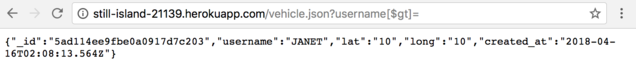
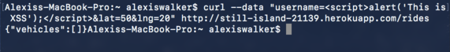
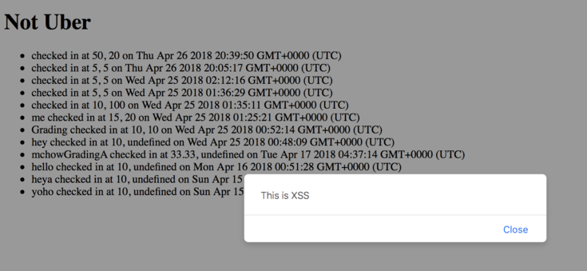

Security and Privacy Assessment of Assignment 3
Introduction
NotUber, an ride sharing service, is a web application built using the Google Maps API and a node js heroku server with a mongodb database. It contains three endpoints:
- GET /: displays in HTML all riders in the database
- GET /vehicle.json: returns json containing document data of given username
- POST /rides: adds given username to database with latitude and longitude; replaces old entry if username is already in database
With the link to another student’s app, the assignment was to find and exploit vulnerabilities. These may include XSS, Hacking Node/MongoDB, CORS, and more.
Methodology
I used cURL, my web browser and Postman to test the application. With the knowledge about what components were used, and what each endpoint was intended to do, I was able to walk through many of the OWASP top 10 vulnerabilities and check whether they were exploitable or not. With “POST /rides”, I used cURL to send data in the request body that tested various vulnerabilities. With the two “GET” endpoints, I used my web browser (Google Chrome) to check the results of attempting to exploit vulnerabilities (/) or to attempt to exploit vulnerabilities through the request query (/vehicle.json).
Abstract of Findings
In my experimentation with the application, I found vulnerabilities regarding the database and the input taken for the username on the POST /rides endpoint. The database allowed me to access the most recent item stored in the database with an endpoint intended to only give information about a username given by the client. Next, I found that the lack of sanitization of inputs allowed me to send scripts to the POST /rides endpoint, which gave me the ability to display alerts and images on the GET / endpoint. These vulnerabilities allowed me to use the endpoints in ways that I shouldn’t have been able to do, which affects the functionality and success of the application.
Issues Found
Issue: Database Injection
- Location: GET /vehicle.json
- Severity: Low - allows access to unintended information, but not massive quantities of unintended information was exposed
- Issue: without any sanitation of username input, I was able to perform a noSQL injection into the MongoDB database. Using a username input “username[$gt]=”, I was able to retrieve the most recent addition to the vehicles collection rather than the document corresponding to a given username, as intended by the endpoint.
- Resolution: To fix this issue, I would recommend that the programmer sanitize the username input to remove special characters that are crucial in noSQL injections, such as “$” and “[“.

Issue: Cross Site Scripting
- Location: exploited through POST /rides, visible on GET /
- Severity: Medium – inhibits access to functionality of app, but does not
affect the rest of the page/other content within the database
- Issue: without any sanitation of username input, I was able to submit a
script as the username, “username=”; when it
was added to the database and displayed to GET /, it created an alert pop-up.
This created a document without a valid username, and blocked the user from
accessing the content of the endpoint as intended.
- Resolution: To fix this issue, I would recommend that the programmer
sanitize the username input to remove special characters that are crucial
in scripting, such as “<” and “/”.


Issue: Lack of HTTP Strict Transport Security (HSTS)
- Location: all endpoints
- Severity: High – any data, some of which is location based, is transmitted
in plain text and susceptible to being intercepted
- Issue: without any security, such as the use of HTTPS, the data transmitted
to the server, including username, latitude and longitude, is done in
plaintext, making it much easy for it to be intercepted, as in a “man in the
middle” attack.
- Resolution: To fix this issue, I would recommend that the programmer enable
HTTPS, which encrypts data sent, making the data much more secure.
Conclusion
This application does many things well: it checks the values of the latitude and
longitude thoroughly, which prevented me from being able to exploit the app in a
multitude of ways; however, there are definitely still flaws. Sanitizing data
would be valuable for the creator of this app to consider, as it would prevent
many issues without having too much of an effect on the performance of the app,
assuming that usernames cannot contain special characters. Additionally, adding HSTS
could only benefit the app; in a real-world application, encrypting data is crucial
for the user to feel comfortable giving necessary data. Additionally, if this were
turned into a commercial app, credit card information might be transferred, which
makes this vulnerability even more important to fix.
References
- https://zanon.io/posts/nosql-injection-in-mongodb
- https://www.owasp.org/index.php/Top_10_2013-Top_10
- https://developer.mozilla.org/en-US/docs/Web/HTTP/CORS
- https://www.geekboy.ninja/blog/exploiting-misconfigured-cors-cross-origin-resource-sharing/